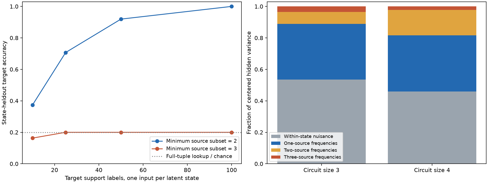

这项探索性诊断使用先前已训练的 72 个编码器，共 2,880 个目标读出端点。源四任务的输出可以被准确解码；但平均 49.71% 的隐藏表征方差来自相同三维潜在状态内部的输入变化。源任务全正确并不保证整个隐藏几何只保留任务需要的信息。

通用类别读出仅接收已解码的源任务答案和少量目标标签：枚举源答案列的子集，选择最小的、在支持集上没有标签冲突的子集；同大小时优先选择支持样本中重复较多的子集。之后查表，未见键回退到支持集多数类。它没有收到有限域系数、运算规则或目标所需的最小子集数。
数学分析在模型外部给出预测：部分目标能由两列源答案确定，其他目标至少需要三列。两列共有 25 种输入状态，三列共有 125 种。因此同样标签预算下，两列查表有机会在未见完整状态上复用答案；三列查表会遇到从未出现的键。
| 数学预测的最小子集 | 目标标签 | 通用类别读出 | 部分键已见比例 | 端点数 |
|---|---|---|---|---|
| 2 | 10 | 37.30% | 28.29% | 369 |
| 2 | 25 | 70.70% | 63.61% | 369 |
| 2 | 50 | 91.93% | 89.33% | 369 |
| 2 | 100 | 100.00% | 100.00% | 369 |
| 3 | 10 | 16.31% | 21.13% | 351 |
| 3 | 25 | 20.00% | 0.00% | 351 |
| 3 | 50 | 20.00% | 0.00% | 351 |
| 3 | 100 | 20.00% | 0.00% | 351 |
每个目标留出 25 个完整潜在状态，测试包括每状态的 5 个输入变体；目标支持集包含另外的状态，每状态最多一个输入。每类测试与支持标签平衡，支持预算 10、25、50、100 嵌套。源预训练已经见过所有输入与所有潜在状态，因此这里只留出了目标标签对应的状态，不是新实体源泛化。
完整四列答案查表始终为 20%。另列的有限域仿射拟合可以达到 100%，但它明确具有 F5 仿射假设这一数学先验，应与通用类别读出分开理解。原有线性和 MLP 神经读出迁移结果见 读出跟进，不能用这里的查表成绩替换。
完整汇总 · 逐模型频谱与冗余方差 · 全部目标端点 · PDF 图